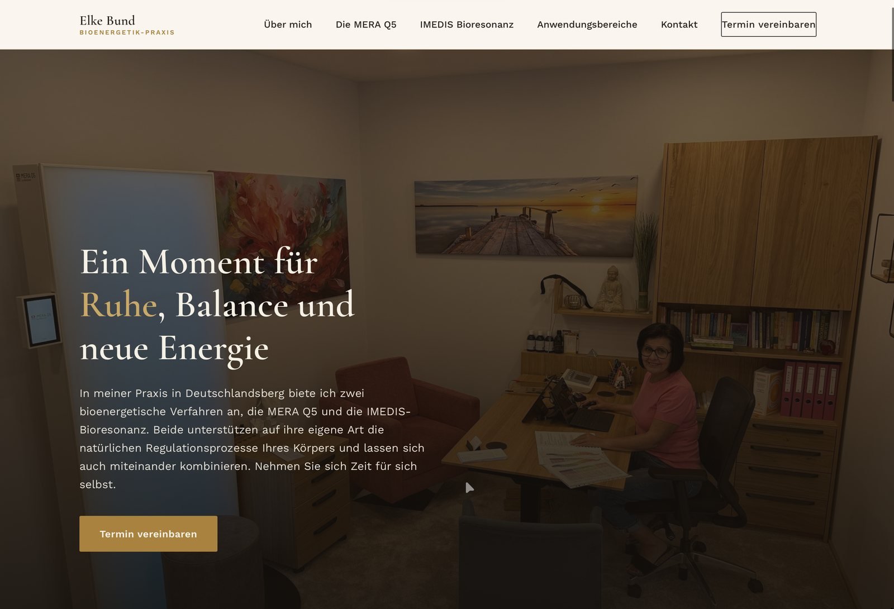
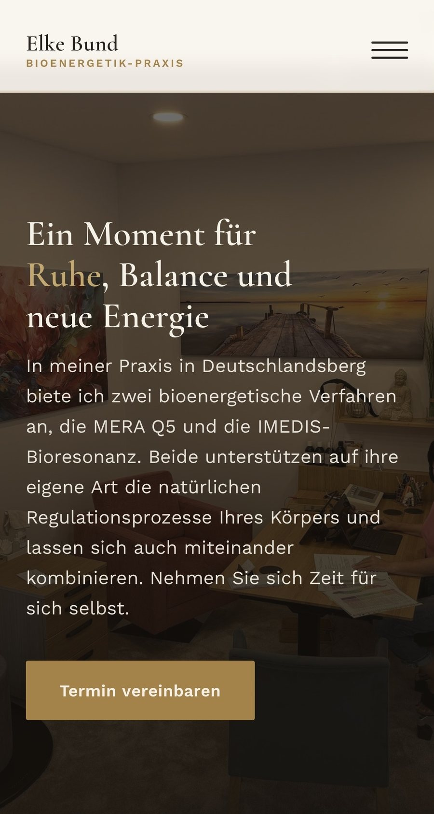
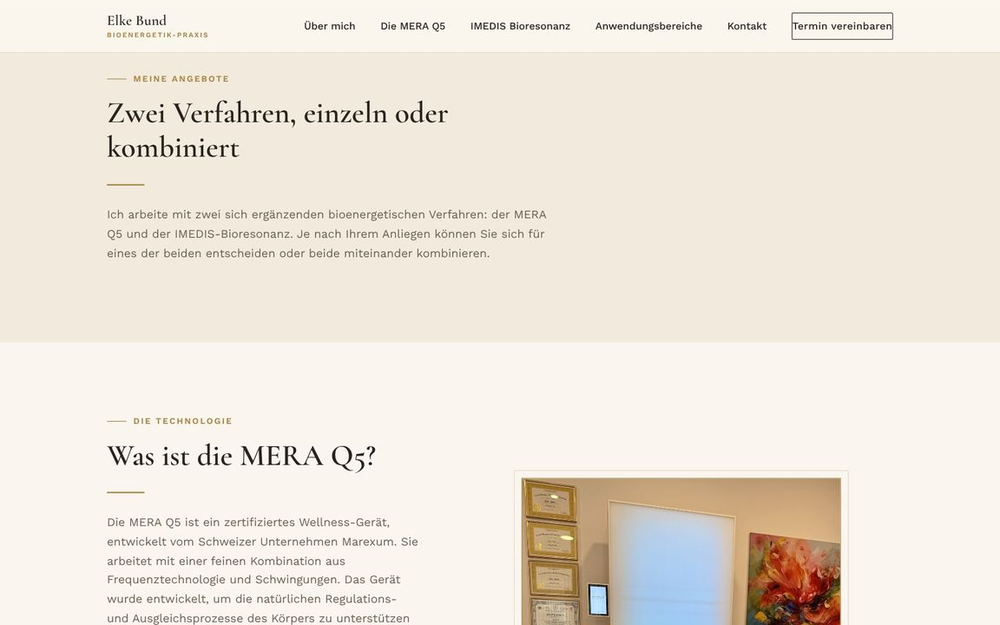
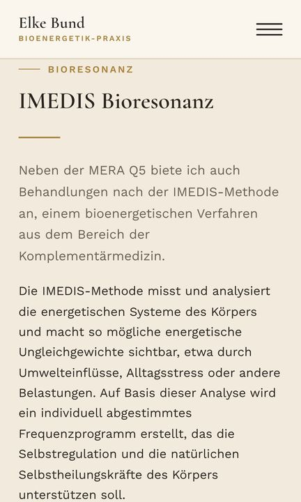
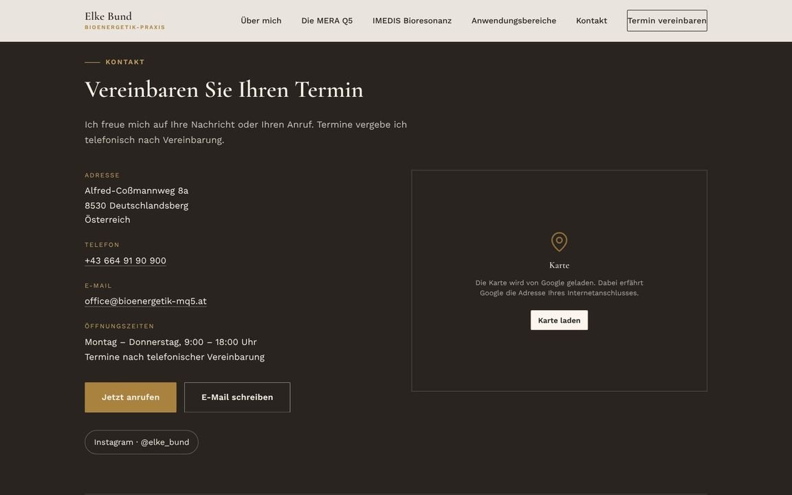
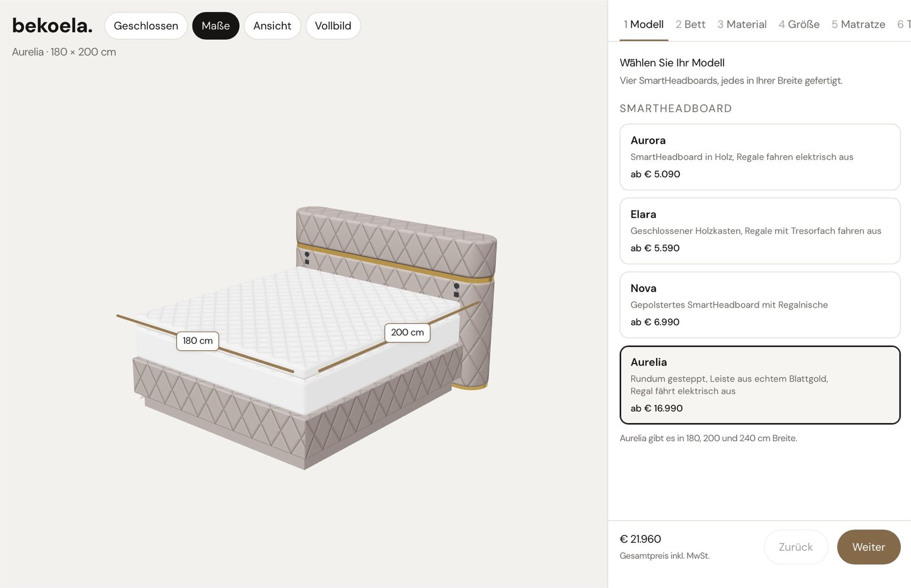
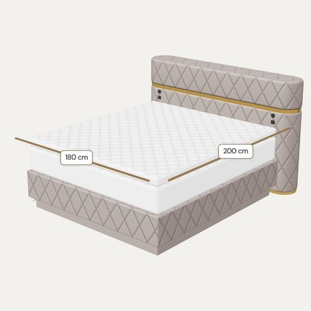
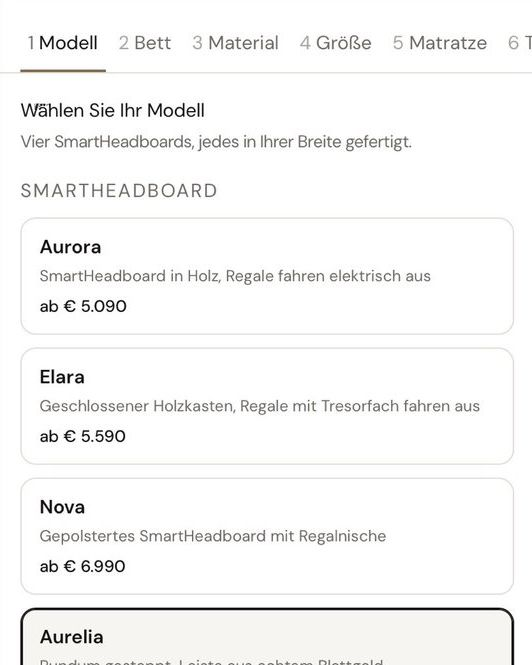

Webdesign
Ein vollständiger Webauftritt, von der Struktur über die Gestaltung bis zum Text. Individuell entwickelt, kein Baukasten.
Individuell entwickelte Websites für Unternehmen und Selbstständige in ganz Österreich. Kein Baukasten, sondern ein Auftritt, der auf Ihr Angebot und Ihre Kunden zugeschnitten ist.
Referenz ansehenKapazität für neue Projekte
Ein vollständiger Webauftritt, von der Struktur über die Gestaltung bis zum Text. Individuell entwickelt, kein Baukasten.
Überarbeitung bestehender Websites, die veraltet wirken oder am Smartphone nicht mehr funktionieren. Vorhandene Inhalte werden übernommen.
Websites mit Verwaltungsbereich, über den Sie Inhalte selbst bearbeiten. Für Blogs, regelmäßige Neuigkeiten oder mehrere Personen, die Inhalte pflegen.
Umsetzung von Onlineshops mit WordPress und WooCommerce. Produktdarstellung, Warenkorb und Bezahlvorgang, auf Ihr Sortiment abgestimmt.
Veröffentlichung, Domain und Verschlüsselung übernehme ich. Dazu die Einrichtung von Mailkonten und Weiterleitungen.
Aktualisierungen, Sicherheitsupdates und Erweiterungen nach der Veröffentlichung. Technische Fragen werden laufend betreut.
Unternehmerisch bin ich, seit ich in der Schulzeit mein erstes Unternehmen im Rahmen eines Schulprojekts als CEO geführt habe. Wir haben es profitabel betrieben, nicht als Planspiel, sondern mit echten Kunden und echten Margen. Der technische Teil begleitet mich noch länger. Erste Berührung mit dem Programmieren hatte ich in der Mittelschule, darauf aufgebaut habe ich eigenständig und bringe mir seither laufend neue Techniken bei.
Weil ich selbst Unternehmen aufgebaut habe, weiß ich, wie viel an einer guten Website hängt. Deshalb baue ich sie jetzt für andere.
Neue Werkzeuge nehme ich in Betrieb, sobald sie einen Vorteil bringen. Künstliche Intelligenz setze ich beim Aufbau gezielt ein, das senkt Entwicklungszeit und damit den Preis. Gestaltung, Struktur und alle inhaltlichen Entscheidungen treffe ich selbst.
Vom ersten Gespräch bis zum Launch bin ich selbst verantwortlich, kein Projekt wird durchgereicht.
Vollständiges Redesign für eine Praxis für Humanenergetik, verantwortet von der Konzeption über Struktur und Text bis zur Veröffentlichung. Zurückhaltende Farbgebung, eine klar geführte Strecke zur Terminanfrage und eine Darstellung, die auf dem Smartphone ebenso trägt wie am Desktop.
Projekt ansehen →




Produktkonfigurator für Betten nach Maß. Modell, Bett, Material, Größe und Matratze werden Schritt für Schritt gewählt, die Ansicht zeigt das Bett mit seinen Maßen, und der Gesamtpreis aktualisiert sich mit jeder Auswahl.
Projekt ansehen →


Der Preis richtet sich nach Umfang und Technik. Nach dem kostenlosen Erstgespräch erhalten Sie ein schriftliches Angebot mit Fixpreis. Die Umsetzung beginnt erst nach Ihrer Freigabe, nachträgliche Kosten entstehen nur für Leistungen, die Sie zusätzlich beauftragen.
Eine schlanke Website ist ab zwei Wochen veröffentlicht. WordPress Websites und Onlineshops benötigen je nach Umfang länger. Der Zeitrahmen wird im Angebot festgehalten.
Nur, wenn Sie Inhalte regelmäßig selbst bearbeiten möchten, etwa für Neuigkeiten, einen Blog oder einen Onlineshop. Ändern sich Inhalte selten, ist eine statische Website die bessere Wahl: sehr schnelle Ladezeiten, kein Wartungsaufwand und keine laufenden Systemkosten.
Bei einem Baukasten ist Ihre Seite auf das begrenzt, was der Anbieter vorsieht, und die Daten liegen dauerhaft bei einem fremden System. Eine individuell entwickelte Website gehört Ihnen und lässt sich ohne diese Grenzen erweitern.
Ja. Veröffentlichung, Domain und Verschlüsselung übernehme ich, ebenso die Einrichtung von Mailkonten und Weiterleitungen.
Auf Wunsch betreue ich die Website weiter: Aktualisierungen, Sicherheitsupdates, Erweiterungen und technische Fragen. Bei einem Verwaltungsbereich erhalten Sie Zugänge und eine kurze Anleitung.
Nein. Ich arbeite für Unternehmen und Selbstständige aller Branchen in ganz Österreich. Die Abstimmung erfolgt per Telefon oder Mail.
Das Erstgespräch ist kostenlos und unverbindlich. Schildern Sie kurz Ihr Vorhaben, ich antworte in der Regel innerhalb eines Werktags.